词语过滤
词语过滤是对会员发布内容中非法、广告词、恶意灌水或骂人等的词语进行过滤，以保证网站内容的文明，合法。
词语过滤分为三种：禁止、审核、替换，分别进行词语禁止发布、先审核后发布操作和替换为给定的词语后再发布。
过滤词即可以单独添加，也可以批量添加，同时过滤词语还可以分类。
操作路径：【后台】=>【内容】=>【词语过滤】
一、编辑词语分类
可以为词语过滤添加不同的分类名称，以区别不同的用途，方便管理，如政治类、广告类、恶意灌水类等，根据自己的站点情况随时增加或者删除。
1、新增分类
点击“新增”然后添写分类名称，点击提交即可增加，如下图所示：
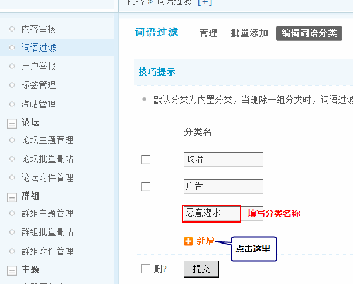2、删除分类
点击要删除的分类名称前面的选择框，然后选择删除即可。
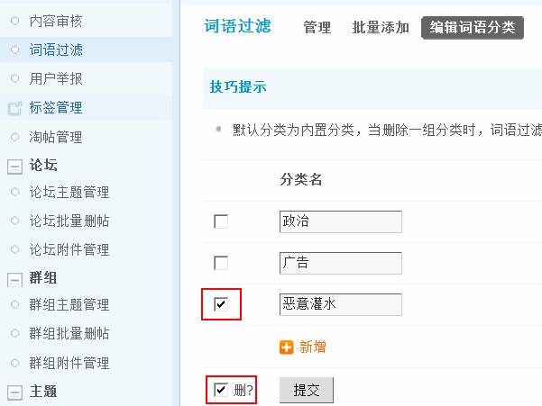二、管理不良词语
可以单独分别添加不良词语和过滤动作，并选择词语分类。
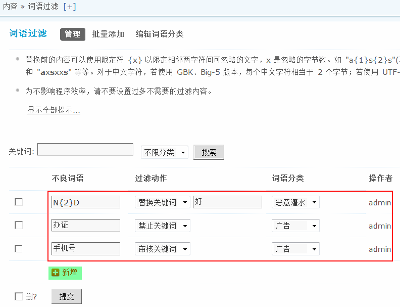替换关键词：将内容中非法的词语替换成合法的词语，如：N{2}D 替换成“好”。
这里的{2}以限定相邻两字符间可忽略的文字，2 是忽略的字节数。可以过滤 “NND” 也可过滤 “NNND” 等等。
禁止关键词：包含被禁止关键词的内容将不允许发布。
审核关键词：包含审核关键词的内容将会被放进待审箱，如：发表带有“手机号”的词语的帖子，需要管理人员审核后才可以显示。
注意：审核不但对站点中的内容有效，而且对空间以及门户文章的评论内容都有效。
添加不良词语：
点击上图中的添加链接，然后选择过滤动作和词语分类即可添加。
根据上图中的设置我们来发表帖子，效果如下：
1)替换关键词：
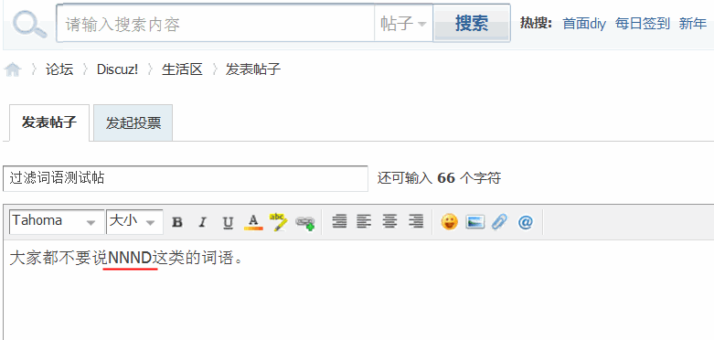帖子发表后的效果：
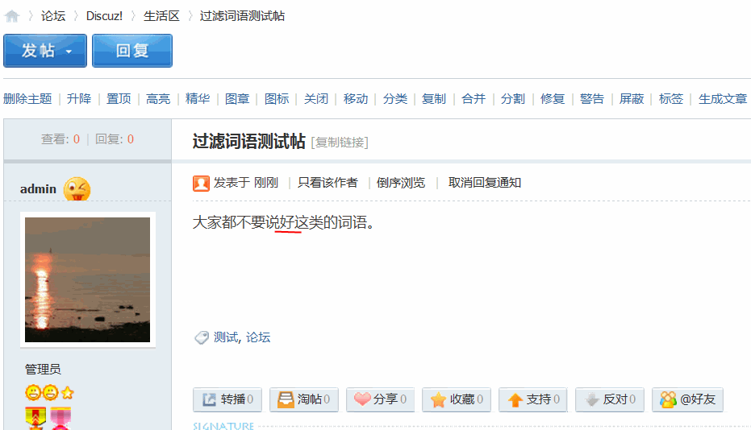2)禁止关键词：
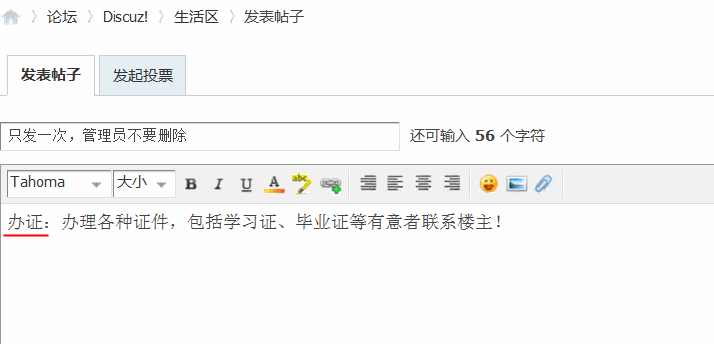提交后提示如下：
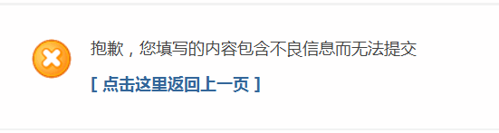3)审核关键词：
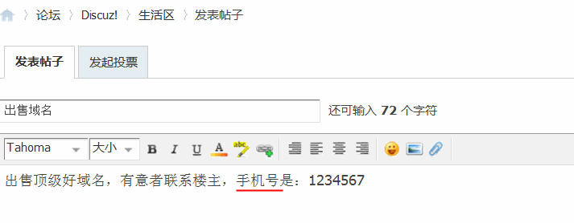提交后提示需要管理人员进行审核
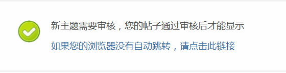4）删除不良词语：
勾选不良词语前面的复选框，然后提交可以删除单个不良词语。
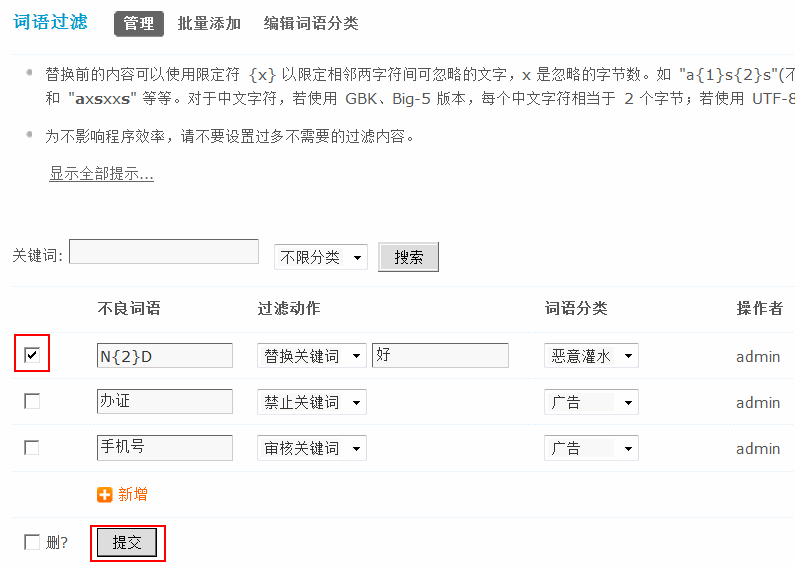选择“删”可以批量删除。
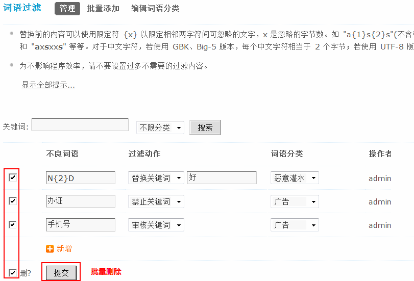说明：
1、如果您不是论坛管理员，您将只能对自己添加的项目进行编辑或删除。
2、不良词语如果以”/”(不含引号)开头和结尾则表示格式为正则表达式，这时替换内容可用”(n)”引用正则中的子模式，如”/1d{10}([^d]+|$)/”替换为”手机(1)”。
3、为不影响程序效率，请不要设置过多不需要的过滤内容。
二、批量添加
如果你有一份完整的过滤词库可以通过批量添加，操作更加方便快捷，如图：
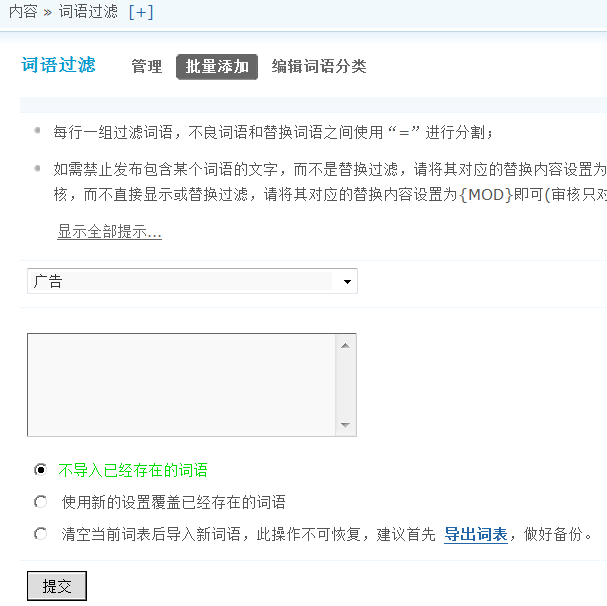每行一组过滤词语，不良词语和替换词语之间使用“=”进行分割。
如果只是想将某个词语直接替换成 **，则只输入词语即可。
不导入已经存在的词语：只导入数据库中不存在的非法词语。
使用新的设置覆盖已经存在的词语：系统会覆盖当前的过滤词库，对于没有的，进行添加。
清空当前词表后导入新词语，此操作不可恢复，建议首先导出词表，做好备份：系统会先清空当前的过滤词库，然后添加新的过滤词。
如果想备份之前的词语，可以点击“导出词表”链接，进行导出工作。